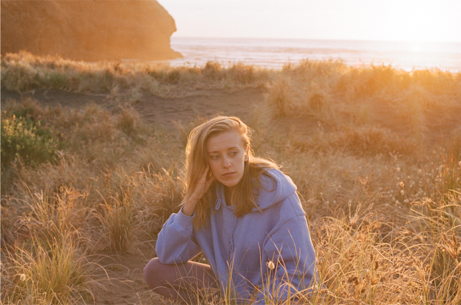

Vera is a Northland, New Zealand based photographer who specializes in portrait,
lifestyle and fashion photography.
After graduating Elam she spent time living in Japan and traveling around Europe.
Her work weaves in the poetry, delicate beauty and nostalgia hidden in everyday scenes.
Striving to capture the essence of the moment that will eventually become memory.
Would you like to find out more? Have an upcoming project or event?
Please call me at (+64) 20 4148 4383 and
I will get back to you as soon as possible.